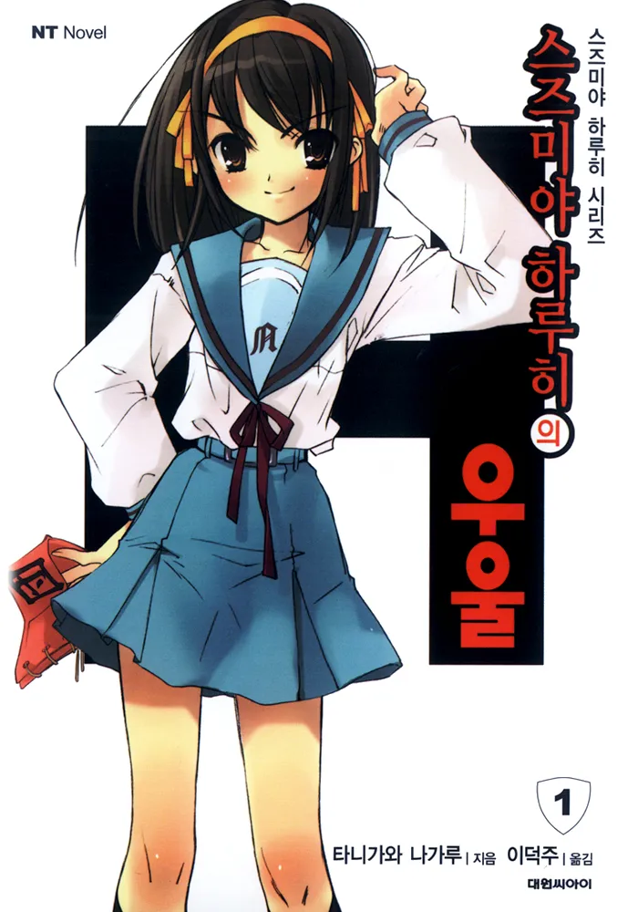
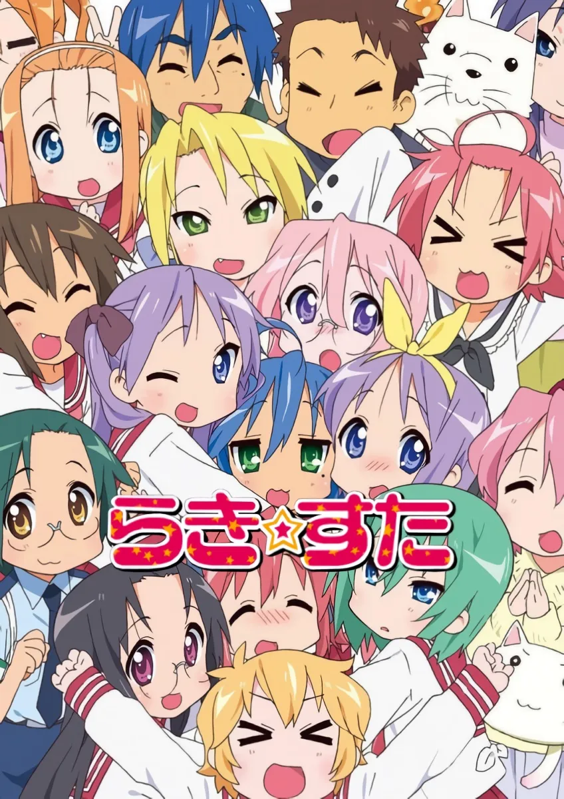
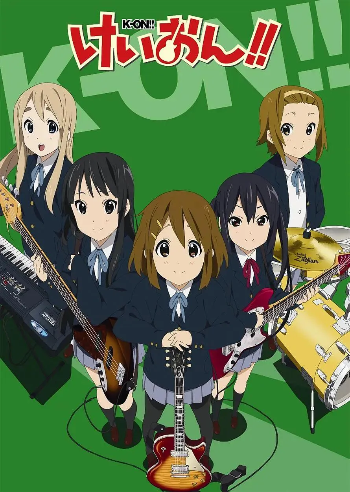

애니메이션 밖으로 퍼지는 작품 경험
학원 일상물과 인터넷 참여 문화의 결합 (2000s)

1. 『스즈미야 하루히의 우울』 (2006)
- 비선형적 편성으로 시청자의 자발적 추리와 개입 유도.
- 작중 엔딩 안무가 팬들의 패러디 영상(춤춰보았다 등)을 통해 인터넷 밈(Meme)으로 전 세계적 확산.


2. 취향의 일상화: 『러키☆스타』 & 『케이온!』
- 『러키☆스타』 (2007): 오타쿠 취미와 타 작품 패러디를 자연스러운 일상 대화로 승화.
- 『케이온!』 (2009): 거대한 사건 없이 반복되는 방과 후 시간과 인물들의 작은 행동에 깊은 애착 형성.